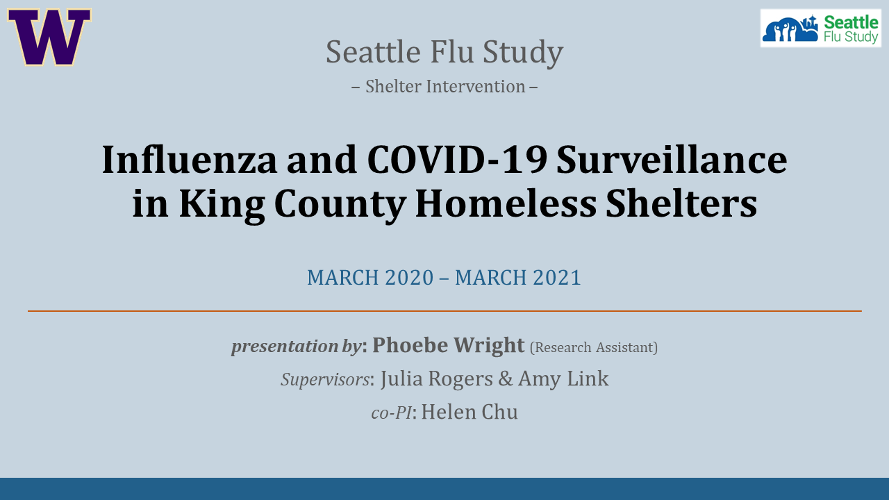
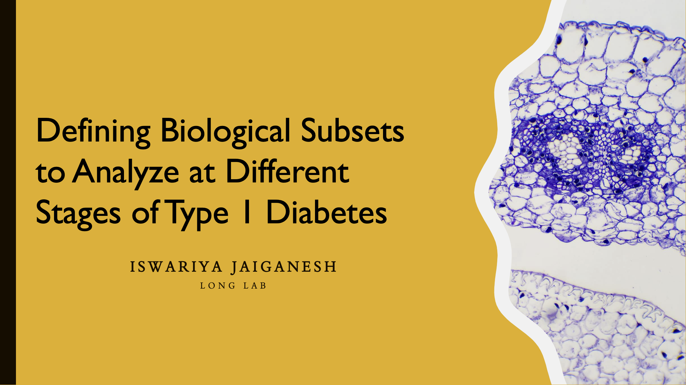
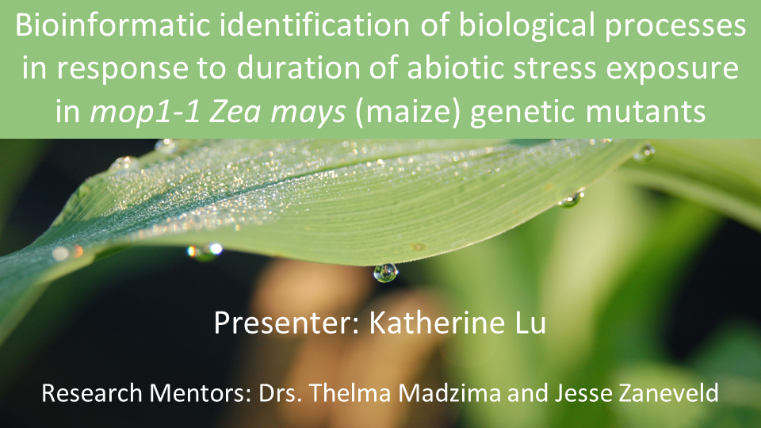
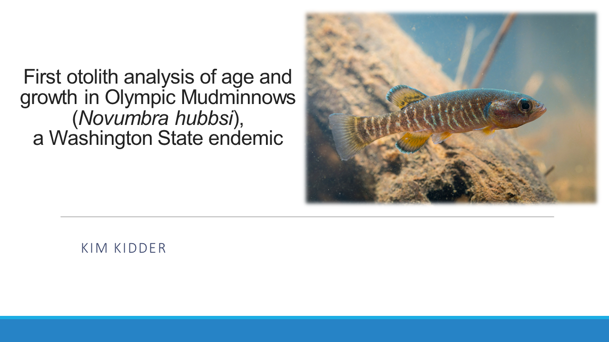

Mute your microphone. Turn on your video if possible, so you are providing an engaged
audience rather than a blank page to the presenter. If you have a question, use "Raise Hand"
under Participants in Zoom controls. At the end of the presentation, use "Clap"
under Reactions to show your appreciation of the presentation. Treat being a Zoom audience
similar to being an audience in a regular presentation, excessive fidgeting, or moving around
can be distracting to the presenter. If you or anybody in the household is streaming video
during the presentation, you may get a choppy video or see "unstable connection"
appear on your screen. If you are using a laptop machine, plug it in so you don't run out of power
during the presentations or worse run out of power when you are presenting!
Welcome by Dr. Alaron Lewis
Division Chair of Biological Sciences
9:00 AM - 9:10 AM
"How Does Competition with Turf Algae Affect the Coral Microbiome?"
9:10 AM - 9:25 AM
Faculty Advisor: Dr. Jesse Zaneveld
Sterling Gordon Fournier
Biology (B.S.)
Katie Visnius
Biology (B.S.)
Neuroscience Minor
"How Does Proximity to Hypoxic Zones Impact Coral Microbiomes?"
9:25 AM - 9:40 AM
Faculty Advisor: Dr. Jesse Zaneveld
David Lee
Biology (B.S.)
.
.
Brandon Robert Shaw
Biology (B.S.)
Chemistry Minor
"Seattle Flu Study"
9:40 AM - 9:55 AM
PI: Dr. Helen Chu
Supervisor: Dr. Julia Rogers & Ms. Amy Link

Phoebe Wright
Biology (B.S.)
Chemistry Minor
"How do Coral Microbiomes Differ According to a Coral Species' Innate Immunity Strategy?"
9:55 AM - 10:10 AM
Faculty Advisor: Dr. Jesse Zaneveld
Carlie Anna Reese
Biology (B.S.)
Chemistry Minor
.
Trang Phung
Biology (B.S.)
Chemistry Minor
.
Nathan Wrzesinski
Biology (B.S.)
Chemistry Minor
Neuroscience Minor
5 Minute Break
10:10 AM - 10:15 AM
"Defining Biological Subsets to Analyze at Different Stages of Type 1 Diabetes"
10:15 AM - 10:30 AM
Faculty Advisor: Dr. Alice Long

Iswariya Jaiganesh
Biology (B.S.)
Chemistry Minor
Neuroscience Minor
"Microbiome Diversity and Disease Vulnerability in Corals"
10:30 AM - 10:45 AM
Faculty Advisor: Dr. Jesse Zaneveld
Andrew Cha
Biology (B.S.)
.
Paulina Figueroa
Biology (B.S.)
.
Kathy Su
Biology (B.S.)
.
"Wildlife Impacts of Recreational Trails and Trail Use in a Heavily Used Urban Greenspace"
10:45 AM - 11:10 AM
Faculty Advisor: Dr. David Stokes
Zayd Almallah
Biology (B.S.)
Chemistry Minor
Neuroscience Minor
Stefanie Castro
Biology (B.S.)
Chemistry Minor
.
Melody Kazemini
Biology (B.S.)
Chemistry Minor
.
Sylvia Joo
Biology (B.S.)
.
.
10 Minute Break
11:10 AM - 11:20 AM
"Bioinformatic Identification of Biological Processes that Respond to Duration of Abiotic Stress Exposure in mop1-1 Zea Mays (maize) Genetic Mutants"
11:20 AM - 11:35 AM
Faculty Advisor: Dr. Thelma F. Madzima

Katherine Lu
Biology (B.S.)
"Edge Effects on the Mesopredator Guild in an Urban Greenspace"
11:35 AM - 12:00 PM
Faculty Advisor: Dr. David Stokes
Deepa Patel
Biology (B.S.)
Chemistry Minor
Dylan Sweeney
Biology (B.S.)
Neuroscience Minor
5 Minute Break
12:00 PM - 12:05 PM
"First Otolith Analysis of Age and Growth in Olympic Mudminnows (Novumbra hubbsi), a Washington State Endemic"
12:05 PM - 12:20 PM
Faculty Advisor: Dr. Jeff Jensen

Kimberlee Kidder
Biology (B.S.)
"Wildlife Barrier Effects of Roads in an Urban Greenspace"